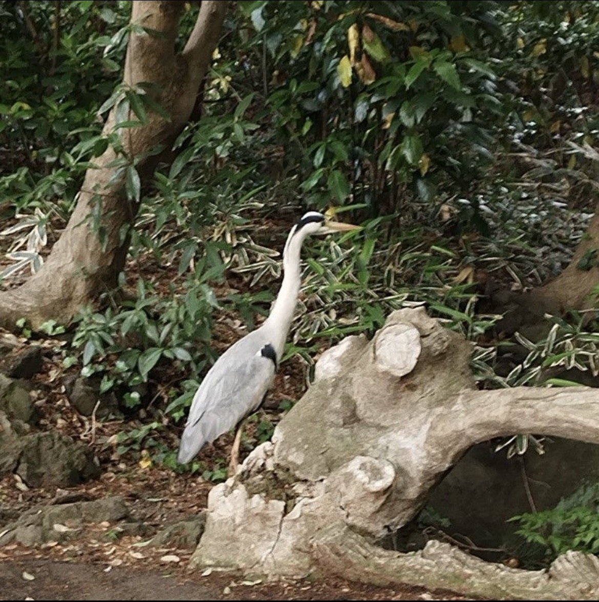
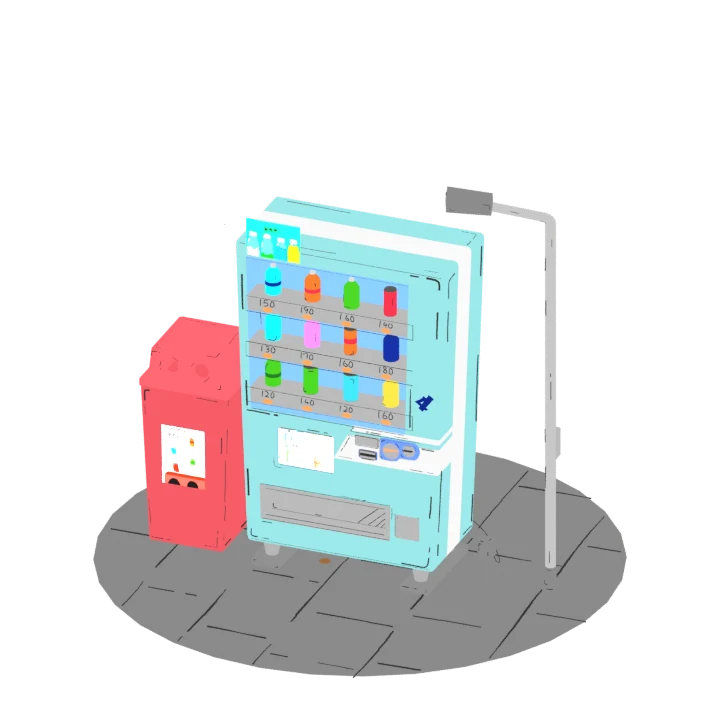

大学での研究
リハビリテーションや介護予防に関する研究をする予定です。

プロフィール / ABOUT ME
SHUN KOBAYASHI
／20歳
東洋大学生命科学部生体医工学科に在籍しています。ゲーム制作では、シナリオ、グラフィック、モーションの制作を担当してきました。
リハビリテーションや介護予防に関する研究をする予定です。
ギター / 3Dモデル制作
ゲーム制作
制作参加作品と担当範囲を紹介します。
作品 01 / 脱出ゲーム
制作時期
使用ツール Blender / Unity
古民家を舞台にした脱出ゲーム。シナリオとグラフィック制作を担当しました。和室の空間や小物など、作品の世界を構成するビジュアルを制作しています。
囲炉裏や庭など、古民家ならではの要素と淡い色合いを活かし、昔ながらの落ち着いた雰囲気を表現しました。その雰囲気を保ちながら、謎の手がかりがどこにあるかを見つけやすい画面づくりを意識しました。
作品 02 / 脱出ゲーム
制作時期
使用ツール Blender / Unity
石造りの部屋を舞台にした脱出ゲーム。シナリオとグラフィック制作を担当しました。
謎と関係のないものを少なくし、手がかりから答えを入力する場所へ直感的にたどり着けるようにしました。探索中に迷いにくく、謎を解くことに集中できる構成を意識しています。
オセロやチェスといった広く知られたボードゲームの要素を謎に取り入れました。身近なルールや特徴を手がかりに、考えを組み立てて解く楽しさを目指しました。
作品 03 / グラフィック・モーション
制作時期
使用ツール Blender / Unreal Engine 5（UE5）
グラフィックとモーション制作を担当しました。作品紹介映像から、キャラクターの動きとゲームの様子をご覧いただけます。
アイドルらしい華やかさやきらめきを表現しながら、2人の実力が拮抗していると感じられるステージづくりを意識しました。
ゲーム性の面では、三すくみの相性に攻撃力とコストの要素を加えました。相性だけでなく、攻撃力とコストも比較して選ぶ判断が生まれるようにし、戦略性を深めました。
制作参加作品の公式ページ
Mochiworks個人制作
Blenderで制作した6作品を掲載しています。

3Dモデルを読み込んでいます…
3Dを読み込めませんでした。
作品を選択
シンプルな配色に手描きの線を加え、イラストのような雰囲気を表現しました。
ドラッグで回転
ホイール・ピンチで拡大／縮小
キーボードの矢印キーでも回転できます
モデルを選ぶと、表示を切り替えられます。